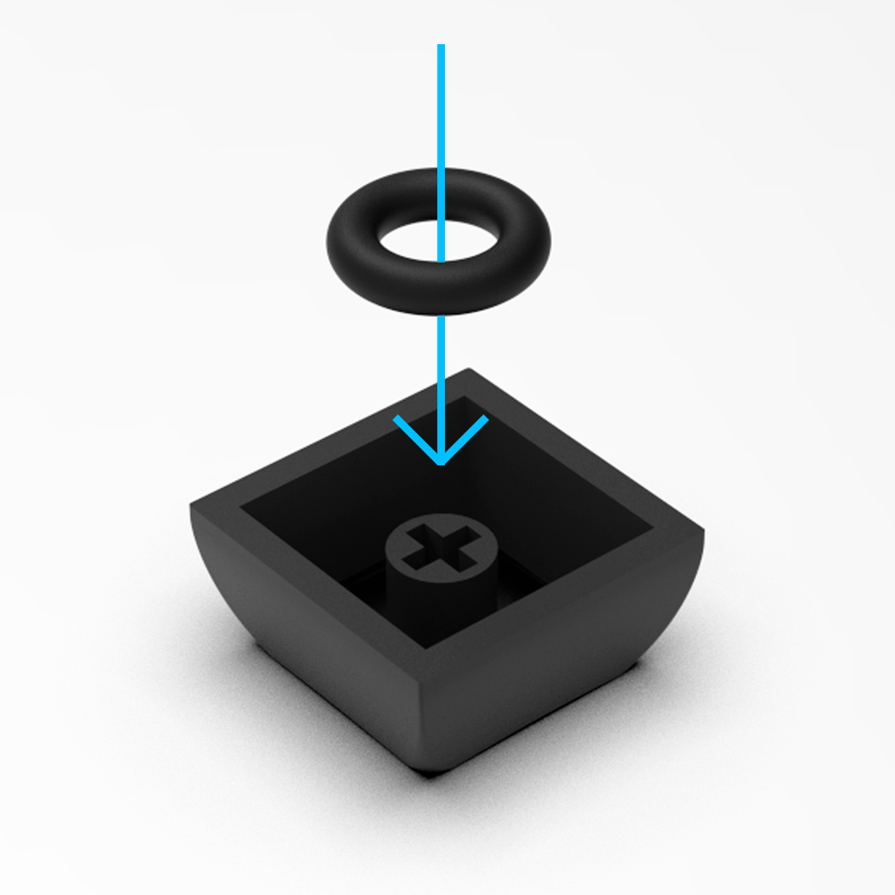
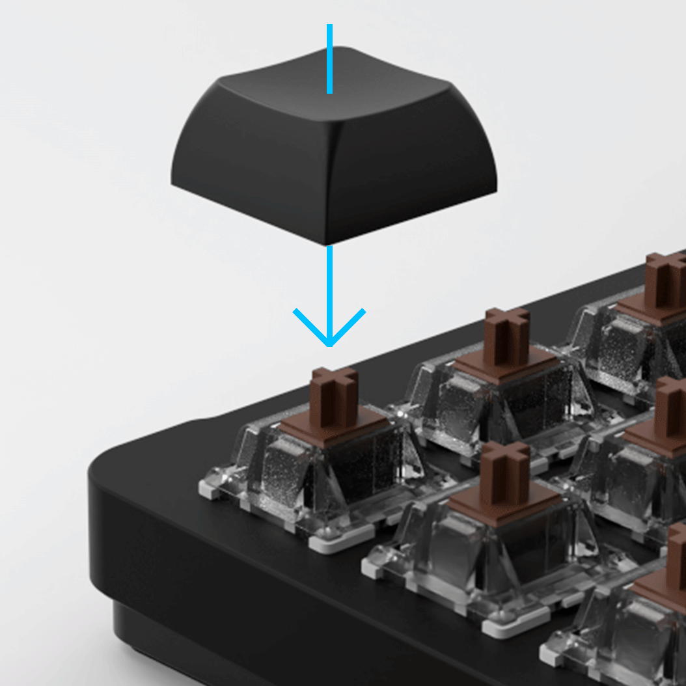
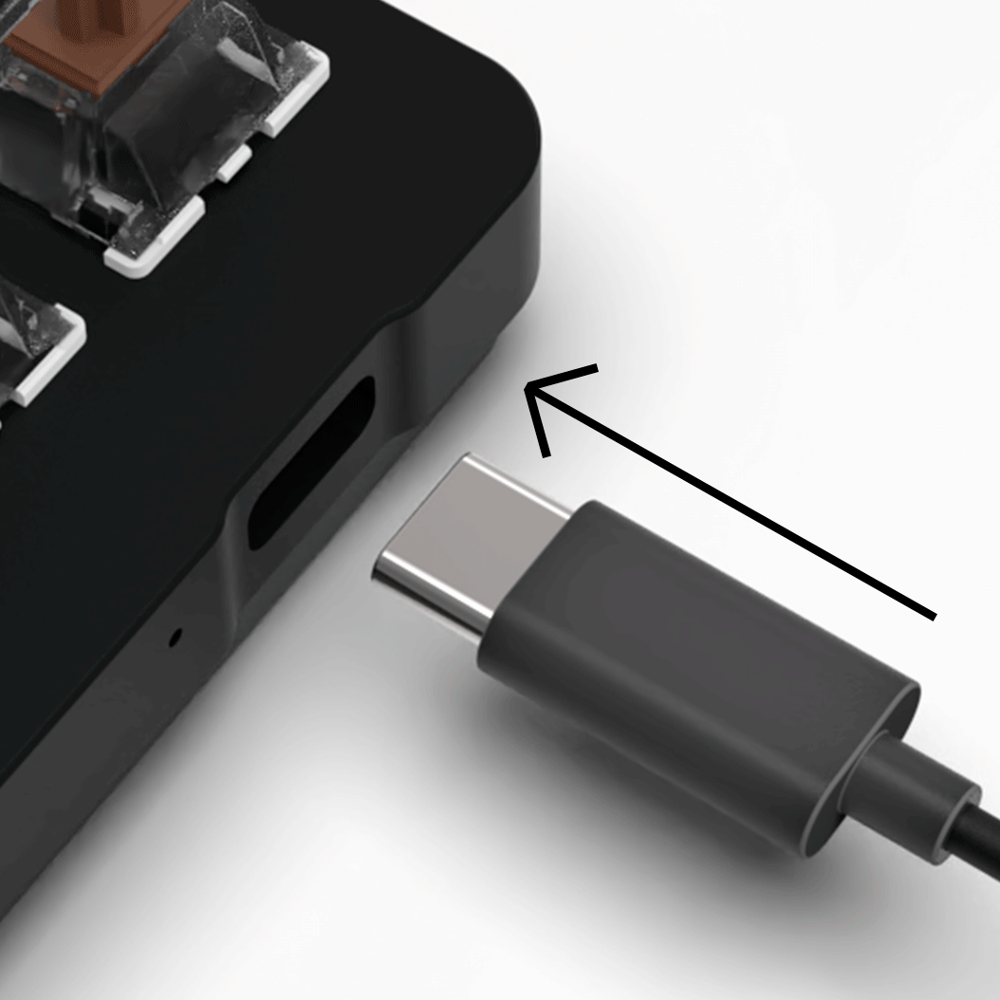

QVEX Lynepad quickstart guide
This page will guide you through the setup and basic usage of a Lynepad.
Are you running an older Lynepad version?
Up until order #00006 (including), the preloaded firmware was the QVEX firmware. If that's your case or your Lynepad is running QVEX Firmware for other reasons, you can continue to a guide on how to setup Lynepad running QVEX Firmware, or reflash the firmware with the QMK according to the Firmware overview page.
1. Install keycaps (11x)


2. Plugin the Lynepad

2. Configuration
- Open VIA configurator
- Click "Authorize device" and select Lynepad
- Configure the Lynepad as you wish :))
VIA tutorial
For better understanding of the VIA configurator, we recommend a video tutorial by Austin V.
3. Done!
Here are some things you might find useful:
Full list of supported keycodes
How to change LED brighntess and color?
How to reset firmware to it's default?
Alternative firmware
What is firmware?
Firmware is the program that runs inside of the Lynepad. It is responsible for detecting key-presses, and communicating with the connected computer. Different firmwares can behave differently, and support communication with a different software on your computer. You can replace the firmware by uploading (flashing) another.
The preloaded firmware is (starting from order number #00007) the QMK. We are developing our own QVEX Firmware together with our QVEX Desktop app. There might be reasons for you to switch to the official QVEX Firmware such as easier AHK support. You can learn more about available firmwares, compare them, and learn how to upload a different firmware on the Firmware overview page.
Setup QVEX Firmware
On our Discord under QVEX Desktop app category, select the Releases channel. Here you will find QVEX Desktop app available for download. If you are on QMK, have an older version of Lynepad, or you are on an older firmware version, QVEX Desktop app will detect your Lynepad and offer you the firmware update (reflash).
Danger
Please carefully read through all the warnings and notes on the Discord. The QVEX Desktop app has very limited functionality as it is in alpha version.